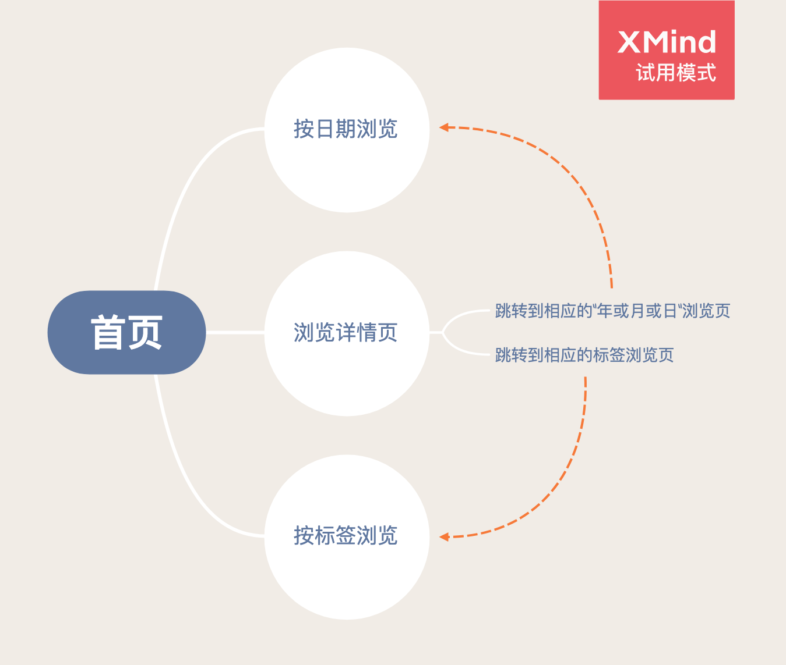

读书笔记之《HTML and CSS Design and Build Websites》
~~ 更新于 -> 2020-09-10
结构篇
文本
不熟悉的控制文本的标签，有些是语义性质的，有些是样式性质的。
- sup, sub
- strong, em
- blockquote
- abbr, cite, dfn
- address
- ins, del, s
列表
一直没用过的 <dl>,<dt>,<dd>
链接
- 相对路径和绝对路径
- 受到
mailto:的启发，在这个博客里使用post:做站内文章间跳转
const originalHref = anchor.getAttribute('href');
if (originalHref?.startsWith('post:')) {
anchor.setAttribute(
'href',
`${__site_root__}/#/${originalHref.replace(':', '/')}`
);
anchor.setAttribute('target', '_top');
}
图片
在选择图片时，相机拍出的实景往往是色彩丰富的，这类图片最好采用 JPEG 格式存储。
为了给图片加上标题，并采用规范的 HTML5 标签 figure ，还写了两个 showdown 插件。
{
type: 'lang',
regex: /!\[(.*?)\]\(:?(.*?) '(.*?)'\)/g,
replace:
'<figure><img alt="$1" src="$2" title="$3" /><figcaption>$3</figcaption></figure>',
},
{
type: 'lang',
regex: /!\[(.*?)\]\(:?(.*?) '(.*?)' =(.*?)x(.*?)\)/g,
replace:
'<figure><img alt="$1" src="$2" title="$3" width="$4" height="$5" /><figcaption>$3</figcaption></figure>',
}
表格
tbody 和 tfoot 也只是为了给表格加样式时方便。
表单
表单的目的仅仅是收集用户数据，表单校验的 APIs 需要熟悉一下。
#datetime:invalid {
border: solid 1px red;
}
#datetime:valid {
border: solid 1px blue;
}
var theForm = document.forms['the-form'];
if (theForm) {
var datetime = document.getElementById('datetime');
datetime.addEventListener('invalid', (e) => {
// 自定义错误提示文字
datetime.setCustomValidity('至少写一个字吧');
});
datetime.addEventListener('input', (e) => {
datetime.setCustomValidity(
datetime.validity.valueMissing ? '至少写一个字吧' : ''
);
theForm.reportValidity();
});
theForm.checkValidity();
theForm.addEventListener('submit', (e) => {
e.preventDefault();
// 手动触发校验
theForm.checkValidity();
var data = new FormData(theForm);
data.delete('x');
data.delete('y');
data.forEach((v, k) => {
if (v instanceof File && v.size <= 0) return;
if (v === '') return;
console.log(k, v);
});
});
}
label 是为了给有障碍的人士准备的，有两种写法：
- 包裹住控件
- for="控件 id"
label 还可以让点击在自己上的事件作用于与它关联的控件。
其它标签
div 和 span 竟然是哥俩， span 在 inline 元素中的地位就如同 div 在 block 元素中的地位。
Flash Video Audio
HTML5 中的 video 和 audio 标签，都可以指定多个不同文件类型的路径，并且在非常旧的浏览器上显示标签间的内容， flash 播放器 就可以放在这里（毕竟播放器大部分都是用户点击才开始播放的，所以不用担心正常播放视频时那个有可能被初始化的 flash 播放器 ）。
CSS 篇
规则和选择器
- 盒子
- 宽、高、边框、背景、位置、阴影
- 文字
- 字体、字号、颜色、粗细、大小写、阴影
- 特殊元素
- 列表、表单、表格
CSS 中的 C 非常重要：1）!important；2）选择器更详细；3）同样详细的话后面出现的。这里详细的定义指该选择器选中的元素越少越详细（数一数、比一比）。
CSS 文件 最好与 HTML 文件 分离开，不论是书写时还是线上时。首先，书写时分离可以改一处影响整个网站；另外，线上分离的好处是第二次加载同一个 CSS 文件 时可以有效利用缓存机制。同样的道理应用于 JS 文件 。为此，我改进了我的 markdown -> html 的逻辑。之前，所有收集到的 css 文件 不管有没有用到都先拷贝到发布文件夹， html 文件 中包含一条引用和 <style>...</style> 两部分。改进后，利用懒加载的方式，动态拼接用到的 css ，并且对线上版做文件最小化处理。
const CSSMaps: {
[key: string]: string;
} = {};
function fetchCSS(base: string): string {
if (CSSMaps[base]) return CSSMaps[base];
const baseCSSPath = path.join(
process.cwd(),
'src',
'template',
'style-source',
`${base}.css`
);
const baseCSSContent = cssMinify(
fs.readFileSync(baseCSSPath, {
encoding: 'UTF-8',
})
);
const cssContent = cssMinify(
tplCSSContent
.replace('/* base_stylesheet */', baseCSSContent)
.replace('/* body_padding_pc */', Sheets[base].padding.pc)
.replace('/* body_padding_mobile */', Sheets[base].padding.mobile)
);
CSSMaps[base] = `${base}.${md5(cssContent).substring(0, 20)}.css`;
const outFilePath = path.join(outDir, CSSMaps[base]);
if (fs.existsSync(outFilePath)) fs.removeSync(outFilePath);
fs.createFileSync(outFilePath);
fs.writeFileSync(outFilePath, cssContent);
return CSSMaps[base];
}
function cssMinify(css: string): string {
if (__production__) {
return css
.replace(/\/\*[\s\S]*?\*\//g, '')
.replace(/\n\s*?(\S)/g, ' $1')
.trim();
}
return css;
}
颜色
HSL 分别指色相、饱和度和亮度。色相指色相环上的颜色，饱和度决定其鲜艳程度，而调节一整张照片的亮度可以帮助突出照片的主体。
常用的文字与背景的对比度搭配：
- darkgray text / white bg
- off-white text / black bg
文字
文字类型：
- serif，字母末端有额外细节
- sans-serif，字母末端无额外细节
- monospace，等宽字
- cursive，连笔字
- fantasy，多用于标题，不适合大段的文字
googlefont 是个好东西，可以使用用户电脑上没有的字体渲染网页，就是网站现在使用的字体所使用的服务。但是，服务里的字体数量还是有限的，有一种在特定情况下可以绕过这层限制的方法：首先需要的文字数量要少，然后制作成 图片。
| 属性名 | 作用 |
|---|---|
| font-weight | 粗体 |
| font-style | 斜体 |
| text-transform | 大小写 |
| text-decoration | 下划线 |
表格中的这几个属性，对我来说，十分容易记混淆。
| 名称 | 定义 |
|---|---|
| pseudo-element | 像是多出来一个元素 |
| pseudo-class | 像是在 classlist 上多出一个 class |
伪类优先级顺序：:link，:visited，:hover，:focus，:active；后者优先级更高。
为 搜索引擎 的优化：利用 text-indent: -9999px;background: url(logo.png); 这样的技术，达到既显示华丽的图片、又提供爬虫可识别的文字内容。
盒子
著名的 margin坍缩，如果要防止这一行为影响界面，就在外面再套一层盒子吧。
椭圆形、不规则形边框：在本站的 标签搜索页 有使用。
为 搜索引擎 的优化：利用 display: none; 达到搜索引擎可见而用户不可见的效果；本站的防盗链机制也利用了这个技术。
List Table Form
| border-collapse's value | effect |
|---|---|
| collapse | border-spacing and empty-cells will be ignored |
| seperate | border-spacing and empty-cells will be obeyed |
布局
虽然现在 float 属性比较少见，但是有个使用 float 带来的问题还是挺有意思的，即：对于一个 containing box 来说，内部元素都是浮动的，其高度就会为 0。解决的办法是 overflow: auto;width:xxx;。
图像
HTML5 布局
下面这段代码太赞了，我记得我最初学习的时候，不仅要兼容 IE9 之前浏览器，还要兼容到 IE6。
<!--[if lt IE 9]>
<script src="http://html5shiv.googlecode.com/svn/trunk/html5.js"></script>
<![endif]-->
header,
section,
footer,
aside,
nav,
article,
figure {
display: block;
}
流程、设计、最佳实践
- Who：调研目标用户群体，获取各个纬度的信息（面试官以及志同道合的朋友）
- Why：调研用户使用本站的动机或者所要满足的特定需求（我给我的博客有两个定位：辅助我面试以及收集并传播一些东西）
- What：调研用户通过本站所能达到的目的（认可我的能力，然后给一份高薪；朋友间交流心得）
- What：调研网站需要提供哪些信息以让用户达到目的（自建站以来我的提升经历，当然也是基于我之前的人生经历）
- How OFTEN：更新频率（而言，取决于我的学习效率）
- Site Map：这里我用思维导图表达一下。
 点击下载「XMind 创作文件」Site Map 1 - Wireframe：确定功能性需求
- Visual Design：首要目的是为了沟通，主要工具是视觉树结构，主要做以下三件事情
- 确定内容
- 排列优先级
- 组织架构
- （Bonus）导航栏设计指南
- 简单
- 明了
- 有选择性
- 最好指示出当前页所在的位置
- 按钮大小要易于交互
- 如果有多级导航栏，要保持一致性
搜索关键字
由于搜索引擎排名算法捉摸不定，而这本书写作的时间又有些久远。书中关于影响网页排名的重要性的排序仅供参考：
- 标题
- 地址（URL）
- 网页内大标题
- 网页内文本
- 网页内链接
- 网页内图片
- meta 标签
流量分析
- V：每跳转来一次（30 分钟内多次仅算一次）
- UV：比 V 的 30 分钟时间更长
- PV：所有用户所有页面的访问量
- Pages Per Visit：平均用户每次访问网站浏览过的页面数
- Average Time On Site：平均用户每次访问网站所停留的时间
- Landing Pages：用户访问网站时的第一个页面
- Top Exit Pages：用户离开最多的页面
网站托管
这个话题似乎有点老了，毕竟这本书写作的时间也有些久远了。我以前一直对计算带宽懵懵懂懂，这下明白了：就是拆分成一个乘法运算，一边是同时访问用户数、另一边是一个带括号的加法运算，各个项就是文件在网络上传输的大小（有些是压缩过的，有些可能没有压缩；而压缩本身会提高对 CPU 性能要求）。
后记
- 说点关于代码注释的吧，上学那会儿真不知道什么该写、什么不该写。有时候差一点就把语法写上去了。这本书里的注释是比较好的范例。
- 另外，虽然这本书是本入门书，但是我如果不是做了几年前端开发的话，肯定是不会把书读薄的。觉得自己不够勤奋、智商不够，接下来的计划中遇到科研级别的问题要如何是好呢。
⚠️ 请先安装一款邮件软件（部分浏览器可能不支持，请使用设备默认浏览器打开本页面）